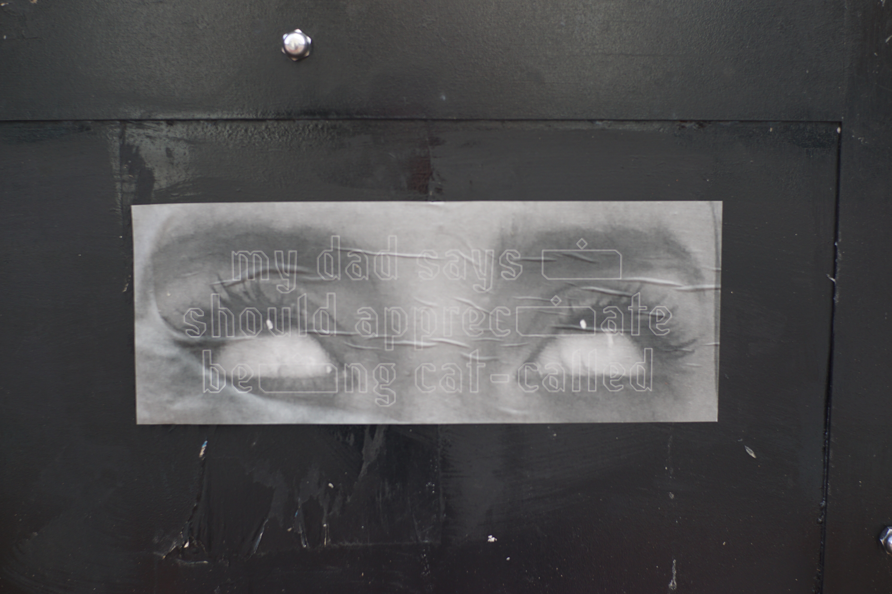
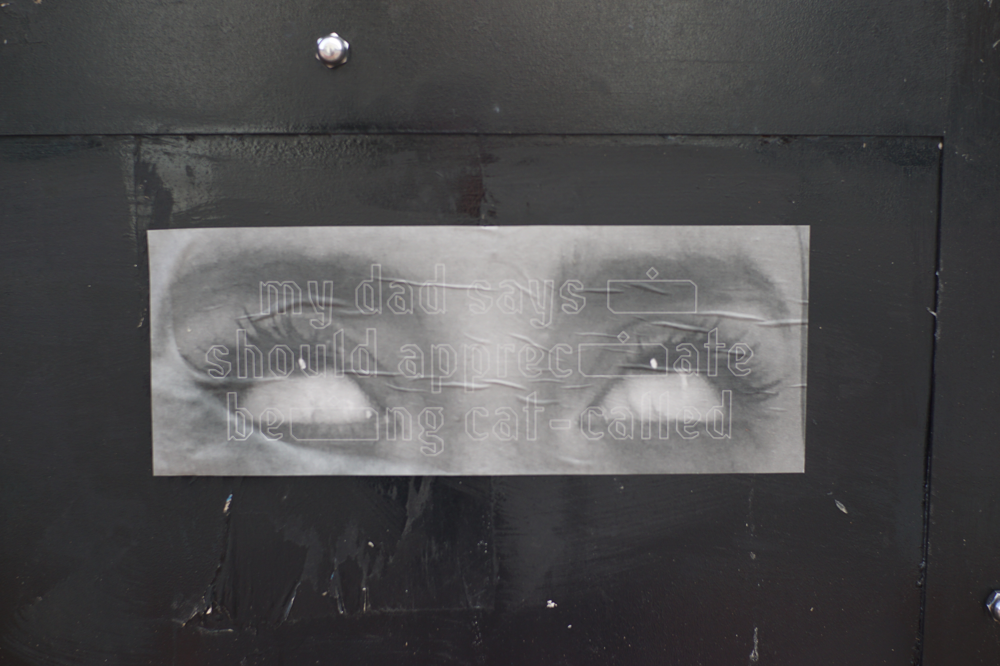

Eye-rolling is widely associated with teenage girls, but there is more to this action’s gendered history.
Psychologists believe that evolutionarily, women have used eye-rolling as a form of indirect aggression, opposed to more overt aggression, in order to survive.
During my day-to-day at risd, and more generally as a female in our society, i find myself eye-rolling a lot:
at the random man on the street who tells me to smile
& at my dad who says i should appreciate being cat-called
& at the male student who repeats verbatim what a female student just said in crit
& at my graphic design textbooks perpetuating the myth of the creative male genius
& at the male student who interrupts and talks over a female student.
For the final installation, I posted my eyes at a much larger scale (approximately seven feet wide) on the outside of the RISD auditorium. The auditorium is in the center of a heavily trafficked part of campus and the installation was large enough that it could even be seen from across the river. I posted a written statement explaining my intentions next to the work and designed a small accompanying publication typeset in Résistance by A collective.
Home


 
